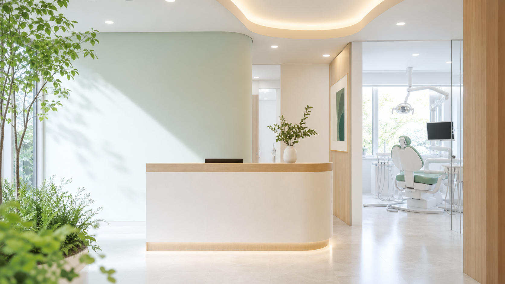
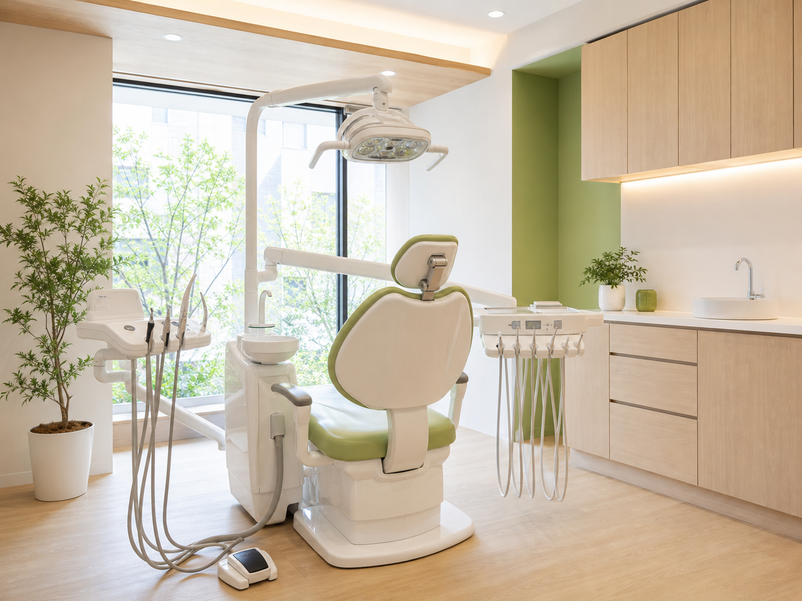

むし歯治療
痛みや違和感のある歯を確認し、状態に合わせた治療方針をご相談します。

平日19:00まで / 土曜17:00まで
話しやすく、通いやすい歯科医院です。

News
Concept
歯科治療に不安がある方にも安心してご相談いただけるよう、青葉デンタルクリニックでは説明の時間を大切にしています。
検査結果やお口の状態を確認し、必要な治療、通院回数の目安、費用について相談しながら進めます。
Medical
気になる症状や通院目的に合わせてご相談ください。
痛みや違和感のある歯を確認し、状態に合わせた治療方針をご相談します。
歯ぐきの腫れや出血、口臭が気になる方に、検査とケアをご案内します。
定期検診とクリーニングで、お口の健康維持をサポートします。
お子さまのペースに合わせて、怖がらずに通えるよう配慮します。
見た目や噛み合わせが気になる方へ、必要な検査や選択肢をご案内します。
急な痛みや詰め物の外れなどは、予約状況を確認のうえご案内します。
First Visit
初診では、お口の状態を確認し、必要な検査と説明を行います。保険証、お薬手帳、紹介状がある方はお持ちください。
オンラインまたは電話で希望日時をご相談ください。
症状や不安な点を伺い、必要な検査を行います。
検査結果をもとに、治療方針をご説明します。
Doctor
患者さまが納得して治療を選べるよう、検査結果や治療の選択肢を丁寧に説明します。小さな不安も相談しやすい医院づくりを大切にしています。
Hours
予約優先制です。急な痛みがある場合も、まずはお電話でご相談ください。
| 時間 | 月 | 火 | 水 | 木 | 金 | 土 | 日 |
|---|---|---|---|---|---|---|---|
| 9:30-13:00 | ● | ● | ● | - | ● | ● | - |
| 14:30-19:00 | ● | ● | ● | - | ● | △ | - |
△ 土曜午後は14:00-17:00 / 休診日: 木曜・日曜・祝日
Access
Q&A
保険証、お薬手帳、紹介状がある場合はお持ちください。
予約状況によりご案内可能です。まずはお電話でご相談ください。
お子さまの年齢や状況に合わせて、無理のない進め方を相談します。
Reservation
初診、定期検診、痛みや違和感のご相談を受け付けています。お急ぎの場合はお電話でお問い合わせください。